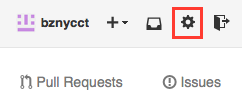
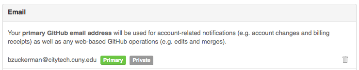

Lab 13, Part 2 - GitHub Pages
Overview
- use github pages to publish a page
Instructions
Cleaning Up
- close terminal
Creating a Project Page
Verify Your GitHub Email
To create pages on github, you need to have a valid email address. The email linked to your github account may already be verified, so start off by checking that. If not, you can prove that you have a valid email address by going through github’s email verification process.
- if haven’t done so already, log in to github.com
- go to your github account settings 
- go to your email settings

- if you see your email address followed by "Primary" and "Public" or "Private" buttons, you're all set. Skip to the next section, Create Your Page in a Branch. 
- if you see a button that says "Unverified" you should also see a button on the right-hand side that says "Send verification email". Click to send verification email.

- log in to your email
- find the confirmation email
- it should be from GitHub with a subject of “Please verify…”

- click on the link to verify your email address
- Whew! On to the next step…
Create Your Page in a Branch
- show what branch you’re currently working in:
git branch
- this should result in (the star means that you’re currently working on that branch):
* master
- create another branch in your local repository; call it gh-pages
git checkout -b gh-pages
- git should respond with:
Switched to a new branch 'gh-pages'
- now… check which branch you’re on
git branch
- the star should be next to gh-pages
* gh-pages
master
- create a new file called index.html using nano
nano index.html
- add the text: “My GitHub Page”
- CTRL-X to save (press Y, then enter when prompted to save the file)
- use status, add, and commit to save your changes
- finally, send to github using git push, but make sure it goes to origin gh-pages NOT master! (see command below)
git push origin gh-pages
- this should give back the following output (note the part that’s gh-pages -> gh-pages):
* [new branch] gh-pages -> gh-pages
- wait about 5 to 10 minutes… (this is just for the first time that you create a page)
- open http://yourusername.github.io/lab-13-remote/ in your browser (replace yourusername with your actual github username)
What to do While Waiting
- start SublimeText2
- go to File → open
- browse to your Desktop → username folder → lab-13-remote → index.html
- open the file
- overwrite what’s in your file with:
- basic html structure
- a heading that says lab-13-remote
- and a list with five elements, all links
- the first goes to your homepage: index.html … call it home
- one to the octocat gallery: http://octodex.github.com/ … call it octocat
- the other to unicode snowman: http://unicodesnowmanforyou.com/ … call it snowman
- another link to: about.html (not yet created) … call it about
- one last link to: practice.html (not yet created) … call it practice
- check in on your github page to see if it’s available:
- open http://yourusername.github.io/lab-13-remote/ in your browser (replace yourusername with your actual github username)
- ———–make sure your previous page (with just text) works before moving on————–
- if it works, you can use status, add, and commit to save your work
- …then push to origin gh-pages
- now look at your page again…
- open http://yourusername.github.io/lab-13-remote/ in your browser (replace yourusername with your actual username)
- finally, use html-ipsum to generate content to drop into your page
- copy the generated markup and drop it below the list that you created
- if it works, you can use status, add, and commit to save your work
- …then push to origin gh-pages
- check out your page again…
Resources and Possibilities
- follow this guide to create a project page…
- start making javascript games